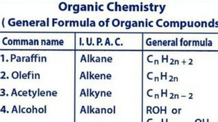

Công thức tổng quát

Image source: Topic 3 image sources
| Vietnamese | Công thức tổng quát |
|---|---|
| English | General formula |
| Pronunciation | /ˈdʒenərəl ˈfɔːrmjələ/ |
| Word type | Noun phrase |
Meaning (Vietnamese)
Công thức tổng quát
Meaning (English)
A formula expressing the composition of a group of compounds using variables or parameters.
Example
Chemists use the general formula CₙH₂ₙ₊₂ to represent acyclic alkanes.
Các nhà hóa học sử dụng công thức tổng quát CₙH₂ₙ₊₂ để biểu diễn các alkane mạch hở.
Another definition from the notes
Công thức biểu diễn thành phần của một nhóm hợp chất bằng các biến hoặc tham số
A formula expressing the composition of a group of compounds using variables or parameters
Another definition from the notes
A formula expressing composition using variables or parameters.
Source of information: Topic 3 notes (see Sources)